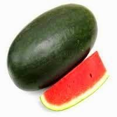
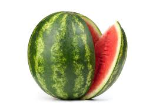
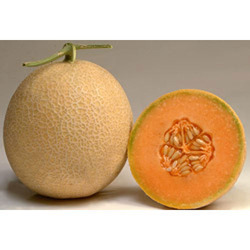

We offer both black (Kaala) and striped (Dharidaar) Watermelon which is both round and oval in shape Black (Century) Features.
| Name | Characteristic | Picture |
|---|---|---|
| 1.Century Watermelon with stripes | Easy to cook, texture waxy, mild flavor, occasional discoloration after cooking. Suitable for instant flakes and chips. Also suitable for exports. |  |
| 2.Watermelon | Easy to cook, waxy texture, mild flavor, free from discoloration after cooking. Not suitable for processing. |  |
| 3.Melon | Easy to cook, floury texture, mild flavor, free from discoloration after cooking. Not suitable for processing. |  |